DALE CARNEGIE · HOW TO WIN FRIENDS · PART ONE · CHAPTER 2 · PDF p38–50
The Big Secret of Dealing with People
You can only get people to do things by making them want to. And the want almost nobody feeds is the wish to feel important. Feed it honestly and people will work hard for you.
Carnegie starts with a blunt claim: force aside, the only way to get anyone to do anything is to make them want to do it. So what do people want? Most of our wants (food, sleep, money, health) are met most of the time. One is not: the hunger to feel important and appreciated. The chapter shows how strong that hunger is (people built cities, robbed banks and even fell ill to satisfy it), then shows managers, a husband, a theatre producer and a teacher who fed it and got remarkable results. It ends by drawing a hard line between appreciation, which is sincere, and flattery, which is counterfeit.
Principle 2 of Part One
Give honest and sincere appreciation.
How the chapter fits together
pdf p38 · read this first
Where it sits. This is the second of three chapters in Part One, "Fundamental Techniques in Handling People". Ch.1 was the "stop" half: don't criticize, condemn or complain, because criticism wounds people's sense of importance. This chapter is the "start" half: feed that same sense of importance, honestly. Ch.3 finishes the Part by widening the idea: talk about what the other person wants, not what you want. The "desire to be important" introduced here is the thread that runs through the whole book; Carnegie says so himself.
The argument as a chain. Each row reacts to the one before it.
Claimforce works only while you watch→the one real way: make them want it
Questionso what do people want?→eight big wants→only one goes hungry: feeling important
How strongblue ribbonsLincoln · Dickens · Wrentitles and honoursillness · insanity
CharacterRockefeller vs Dillinger→how you get importance = who you are
ProofSchwab's $1M salaryRockefeller and Bedfordsix rosesZiegfeldStevie WonderPamela Dunham
Objection"isn't this just flattery?"→no: appreciation is sincere, flattery is counterfeit
Methodstop thinking about yourself→find their real good points→Principle 2
Limitsflattery fails with discerning peoplepraise is no substitute for pay or honest feedback1930s psychiatry: read with care→where it can go wrong
About the title: the "big secret" is not a trick. It is the observation that people crave appreciation about as much as food, and that almost nobody gives it. The chapter never names the secret in one line; this summary is ours.
01 · THE CLAIM
There is only one way to get anybody to do anything: make them want to
pdf p38
Carnegie opens with a claim he repeats on purpose: there is exactly one way to get another person to do something, and that is to make them want to do it. He insists there is no other way.
But what about force? He admits you can get results by force, and gives three crude examples:
Point a revolver at someone and they will hand over their watch.
Threaten employees with the sack and they will cooperate, but only until your back is turned.
Use a whip or a threat on a child and the child will obey.
All three "work" for a moment, and all three, he says, have sharply unpleasant side effects. So in practice the only method that lasts is to give people what they want. That raises the question the rest of the chapter answers: what do people want?
Two answers from famous thinkers.
Sigmund Freud: everything we do comes from two motives, the sex urge and the desire to be great.
John Dewey, the American philosopher, put it differently: the deepest urge in human nature is the desire to be important. Carnegie tells the reader to remember this phrase, because it will come back again and again in the book.
"the desire to be important"John Dewey's phrase, quoted by Carnegie (pdf p38)
Force
Revolver, threat of firing, whip. You get the act while you watch, plus resentment and the side effects Carnegie warns about.
Want
Give people something they actually want, above all a feeling of importance. You get effort that continues when you leave the room.
Dated wording. The book says "the whip" for a child as a matter of course, and uses "he" for everyone. Today we would simply say: punishment and threats at home get obedience, not willingness.
Picture it
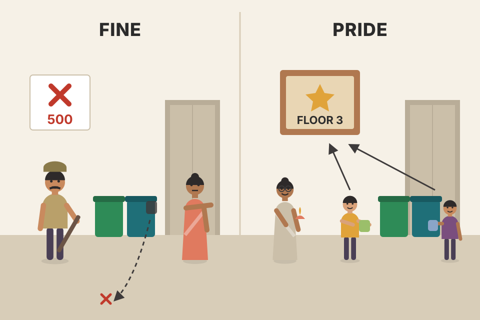
A housing society secretary in Chennai wants residents to segregate wet and dry waste. Option one: a notice threatening a ₹500 fine. People comply on the days the watchman checks the bins. Option two: the secretary announces that the cleanest floor each month gets its name on the lift notice board, and the kids of that floor get to choose the next Diwali event. Suddenly floors compete and segregation happens on its own.
Where it breaks: the fine is not useless; some rules do need a penalty behind them. Carnegie's claim is about what makes behaviour last without a guard standing over it, not that rules should never have teeth.
What's happening behind it
The book's explanation: force gives you behaviour, not willingness, so it stops the moment the pressure stops ("until your back is turned"). Want is self-powered: once someone wants the outcome, they keep going without you.
Beyond the book: motivation research draws the same line between controlled motivation (doing it because of a reward or threat from outside) and autonomous motivation (doing it because you value it). Deci and Ryan's self-determination theory lists three needs that drive autonomous effort: autonomy, competence and relatedness. Feeling important, in Carnegie's sense, sits close to the last two: being good at something and being valued by people who matter to you.
At work
As a lead you hold some "revolvers": performance reviews, the on-call rota, who gets the interesting project. You can use them to get a migration done by Friday, and it will get done, with the minimum effort and maximum grumbling. Or you can find what each person wants from the work (the senior who wants to be seen as the authority on the data layer, the junior who wants a feature they can demo) and connect the migration to it. The second takes longer to set up and much less effort to keep going.
Interview angle. "How do you motivate a team when you have no formal authority?" is this plate. A good answer: you find what each person wants (recognition, learning, ownership) and tie the goal to it, rather than escalating to their manager.
Eight things nearly everyone wants, and the one that goes hungry
pdf p38–39
Carnegie says most of us want only a few things, but we want them with a force that will not take no for an answer. His list of what most people want:
Health and staying alive
Food
Sleep
Money, and the things money buys
Life after death
Sexual satisfaction
The well-being of our children
A feeling of importance
The key observation. Almost all of these are usually satisfied, at least enough to get by. All except one. The last one, a feeling of importance, is almost as deep and demanding as hunger or sleep, and yet it is seldom satisfied. It is the same thing Freud called the desire to be great and Dewey called the desire to be important.
Two more witnesses.
Abraham Lincoln once opened a letter with the remark that everybody likes a compliment.
William James, the psychologist, called the deepest principle in human nature the craving to be appreciated. Carnegie points out James's word: not a wish or a longing, a craving, like a physical hunger.
"The deepest principle in human nature is the craving to be appreciated."William James, quoted by Carnegie (pdf p39)
The payoff. Carnegie calls this a constant, gnawing hunger. The rare person who honestly satisfies it, he says, will have people in the palm of their hand, and even the undertaker will be sorry when they die.
Self-audit: which of your wants is fed?
Slide each want to how well it was met for you this past month (0 = starved, 5 = fully met). Then see Carnegie's point in your own numbers.
Picture it
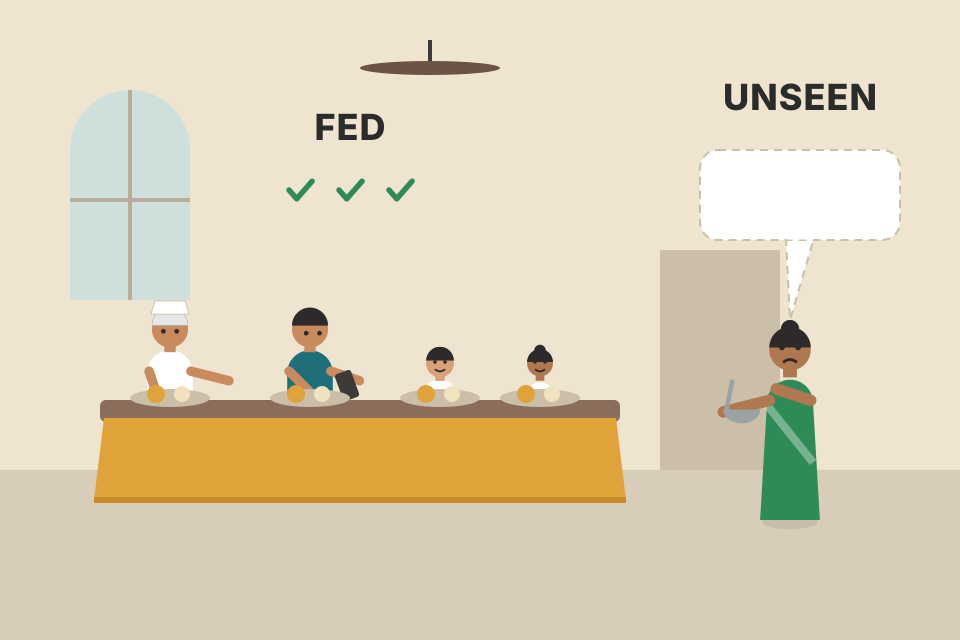
A joint family in Lucknow: everyone gets three meals, a bed, school fees paid, a doctor when ill. The daughter-in-law who runs the kitchen has all the first seven items on the list. What she does not get is anyone saying the dal was good, or asking her opinion on the family's big decisions. Her body is fed; her sense of mattering is not.
Where it breaks: in many families the first items are not met either; for someone who is actually hungry or ill, appreciation is not the starving want. Carnegie wrote for people whose basic needs were mostly covered.
What's happening behind it
The book's explanation: wants that are fed stop driving us. The one that is rarely fed keeps driving us all the time, so it is the lever with the most force. Give people what they already have and nothing happens; give them the thing they are starving for and they remember you.
Beyond the book: Abraham Maslow's later "hierarchy of needs" (1943) puts esteem (respect, recognition, status) just above physical needs, safety and belonging. The order is debated, but the core idea matches Carnegie: once basic needs are met, esteem becomes a major motive. Studies of why people leave jobs often put "not feeling valued" near the top alongside pay.
At work
Your team's salaries, laptops and health insurance are items 1 to 7: necessary, expected, and quickly taken for granted. A raise is felt for a few weeks. What keeps people engaged month after month is item 8: being told their refactor saved the team a week, having their design doc credited in the architecture review, being asked for their view. It costs nothing and is almost always missing.
Interview angle. "What keeps you motivated?" or "Why are you leaving your current job?" Recruiters hear "not valued" often. If it is true for you, frame it forward: "I want a team where good engineering work is noticed and given more scope."
Connects to
Making the other person feel important, sincerely, becomes Principle 6 of Part Two: Part Two, Ch.6.
Father's blue ribbons: the hogs didn't care, but he did
pdf p39
Carnegie claims that the desire to feel important is one of the main things that separates people from animals, and illustrates it with a memory from his childhood.
Missouri farmDuroc-Jersey hogspedigreed white-faced cattlefirst prizes "by the score"
The ribbons. His father bred fine pigs and pedigree cattle and showed them at county fairs and livestock shows across the Midwest, winning a great many first prizes. He pinned all the blue ribbons onto a long sheet of white muslin cloth. Whenever friends or visitors came round, out came the sheet: father held one end, young Dale the other, and the ribbons were put on display.
The point. The hogs had won the prizes, and the hogs could not have cared less. The person who cared was the father. The ribbons gave him a feeling of importance.
The bigger claim. Carnegie goes further: if our ancestors had not had this burning urge to feel important, civilization could not have happened. Without it, he says, we would be little different from the animals.
Picture it
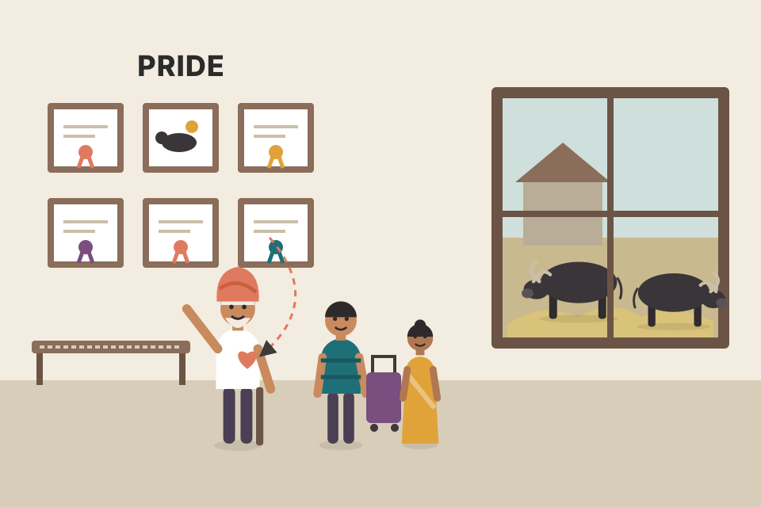
A grandfather in a Punjab village keeps every certificate his buffaloes won at the district cattle fair, framed in the front room. When relatives visit from Canada he takes them straight to the wall. The buffaloes are in the shed, eating, not interested in the frames at all.
Where it breaks: the grandfather's pride is harmless and earned through real work. The same urge can also be fed in harmful ways, as the Dillinger story two plates on shows. The ribbons show that the urge exists; they say nothing about whether it is always healthy.
What's happening behind it
The book's explanation: animals need food and safety; humans also need to be seen as having achieved something. The ribbons were worth nothing to eat, yet they were the most treasured thing the father owned from those shows, because they let others recognise him.
Beyond the book: anthropologists and psychologists (for example the "sociometer" theory of Mark Leary) suggest self-esteem works like a gauge of how valued we are by our group, which mattered for survival when being expelled from a tribe meant death. On that view the hunger for importance is not vanity but an old social alarm system.
At work
Engineers have their own muslin sheets: the conference talk on the CV, the "top contributor" badge, the blog post with their name, the demo at the all-hands. The code would run the same without them. People keep them because they are recognition. A lead who quietly makes sure good work gets its ribbon (a mention in the release notes, the author's name on the design doc) is feeding the strongest motive their team has.
Connects to
Letting people show off what they are proud of (talking in terms of their interests): Part Two, Ch.5.
04 · THE ENGINE OF ACHIEVEMENT
What the urge to feel important has built: law books, novels, cathedrals, mansions and gangs
pdf p39–40
Carnegie lists, quickly, what this desire has pushed people to do, from the noble to the silly to the criminal:
Lincoln. A poor, uneducated grocery clerk bought a barrel of household junk for fifty cents and found some law books at the bottom. He studied them. The clerk's name was Lincoln.
Dickens wrote his great novels because of it.
Sir Christopher Wren designed his buildings (Carnegie calls them "symphonies in stone") because of it.
Rockefeller piled up millions he never spent.
The richest family in your town built a house far bigger than they needed.
It is why you want the latest fashions, the newest car, and to talk about your brilliant children.
And the dark side: it draws many young people into gangs and crime. E. P. Mulrooney, once New York's police commissioner, said the typical young criminal is full of ego, and the first thing he asks for after arrest is the sensational newspapers that make him look like a hero. The prospect of prison feels far away as long as he can enjoy seeing his photo in the paper next to sports stars, film stars and politicians.
"symphonies in stone"Carnegie on Wren's buildings (pdf p40)
Picture it
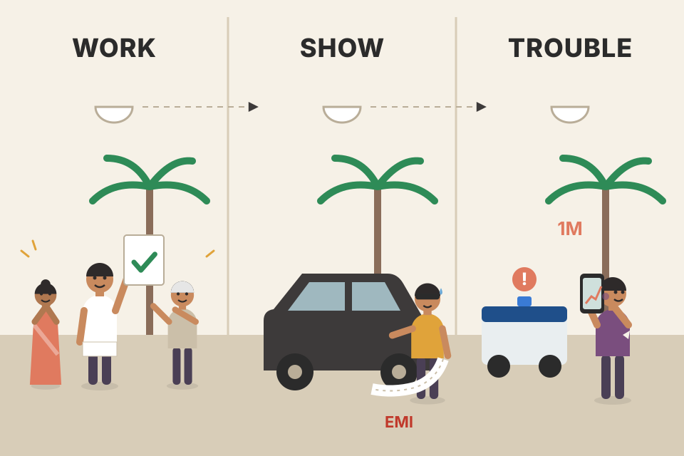
Three cousins in Kochi, all hungry to be noticed. One cracks the JEE and the whole street hears about it. One buys the biggest SUV in the lane on an EMI he can barely pay. One gets into a fight that goes viral on Instagram and enjoys the views more than he fears the police case. Same hunger, three very different meals.
Where it breaks: real people are rarely one cousin; most of us feed the urge through a mix of real work and a little showing off. The picture separates the outlets to make Carnegie's point clear.
What's happening behind it
The book's explanation: one desire is behind all of these. What differs is the outlet a person finds for it. Mulrooney's young criminals show that when a legitimate way to feel important is missing, people take an illegitimate one, and value the recognition more than they fear the cost.
Beyond the book: sociologists studying gangs (for example the "status frustration" idea of Albert Cohen, 1955) argued much the same: young people blocked from status at school or work build groups where toughness earns it. It is one reason youth programmes that give real responsibility and recognition reduce crime better than punishment alone.
At work
The same engineer who could write the team's best design doc may, if never recognised, find importance another way: becoming the person who blocks every PR, hoarding knowledge of the legacy system, or arguing loudly in every meeting. When someone's behaviour seems oddly territorial, ask whether they have a legitimate route to feeling important on this team. Giving them one (ownership of a component, a talk at the guild meeting) often fixes the behaviour.
Connects to
The next plate: how the outlet you choose defines your character.
Giving people a fine reputation to live up to: Part Four, Ch.7.
05 · CHARACTER
Rockefeller's hospital and Dillinger's "I'm Dillinger!": how you get importance is who you are
pdf p40
Carnegie makes a strong claim: tell him how you get your feeling of importance and he will tell you what you are. It decides your character; it is the most significant thing about you.
John D. Rockefeller
Got his feeling of importance by paying for a modern hospital in Peking (Beijing), China, to care for millions of poor people he had never met and never would.
John Dillinger
Got his by being a bank robber, bandit and killer. With FBI agents hunting him, he burst into a Minnesota farmhouse and announced who he was, proud to be "Public Enemy Number One", telling the family he would not hurt them, but he was Dillinger.
"I'm not going to hurt you, but I'm Dillinger!"John Dillinger, quoted by Carnegie (pdf p40)
Carnegie's conclusion. The one meaningful difference between Dillinger and Rockefeller was how they got their feeling of importance. Both had the same hunger. One fed it by helping strangers, the other by frightening them.
Which route? Sort the outlets
Each card is a way someone feeds their feeling of importance at work. Decide: Rockefeller route (importance by giving value) or Dillinger route (importance at others' expense)? Tap to check.
Pick one.
Picture it
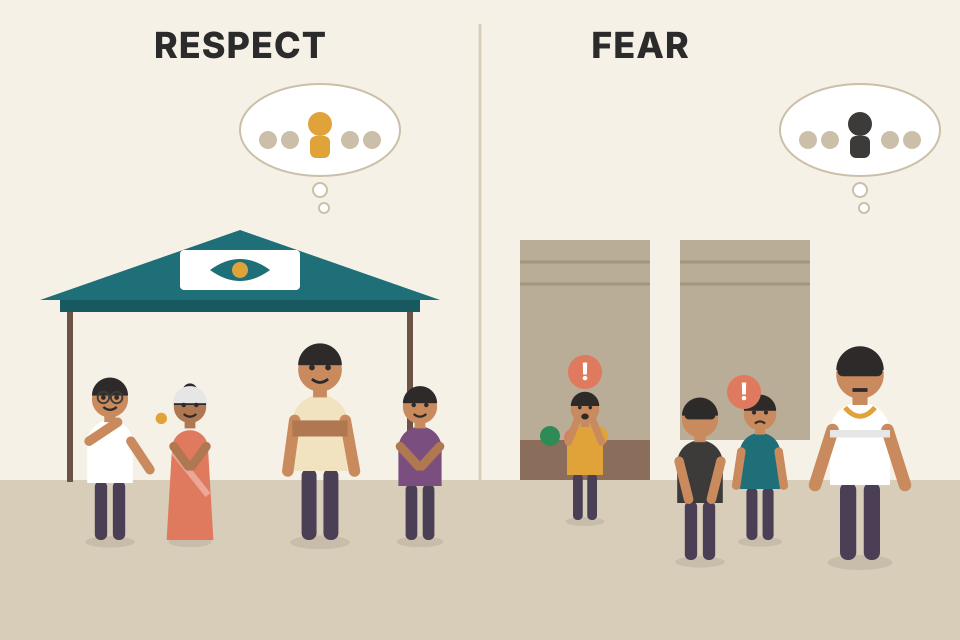
Two well-known men in a small town in Bihar. One funds a free eye camp every winter and is greeted with folded hands at the market. The other is the local strongman who makes sure every shopkeeper knows his name and fears it. Ask either why he does it and the honest answer is the same: he wants the town to know who he is.
Where it breaks: real philanthropists can be vain and real strongmen can have kind moments; motives are mixed. And Rockefeller himself was accused of ruthless business practices in his day. Carnegie's contrast is a lesson about outlets, not a full verdict on two lives.
What's happening behind it
The book's explanation: the desire itself is neutral and universal. Character is the route you take to satisfy it. That is why the principle that follows is about giving people an honest, healthy way to feel important: you are steering which route they take.
Beyond the book: Rockefeller's foundation did fund the Peking Union Medical College and its hospital (opened 1921), which became one of China's leading medical schools. Dillinger was shot by FBI agents in Chicago in 1934. Historians would add that Rockefeller's wealth came from a business (Standard Oil) widely criticised as a monopoly, which makes the contrast less tidy than the book suggests.
At work
Watch how people on your team get recognised. The Rockefeller route: the engineer who becomes known for unblocking others, writing the onboarding guide, or mentoring interns. The Dillinger route: the one known for tearing apart other people's designs in public, or for being the only person who can deploy the billing system. Both feel important. Your job as a lead is to make the first route more visible and better rewarded than the second.
Interview angle. "What are you most proud of?" reveals your route. "I unblocked three teams by building the shared auth library" lands better than "I was the only one who understood the legacy system".
Titles, honours and named mountains: famous people hungry to feel important
pdf p40–41
Carnegie says history is full of amusing examples of famous people craving importance. His list, each in a line:
Who
What they wanted
George Washington
To be addressed as "His Mightiness, the President of the United States".
Christopher Columbus
Begged for the title "Admiral of the Ocean and Viceroy of India".
Catherine the Great
Refused to open any letter not addressed to "Her Imperial Majesty".
Mrs. Lincoln
In the White House, turned furiously on Mrs. Grant for sitting down before being invited to.
American millionaires
Helped pay for Admiral Byrd's 1928 Antarctic expedition on the understanding that icy mountain ranges would be named after them.
Victor Hugo
Wanted nothing less than Paris itself renamed in his honour.
William Shakespeare
Even he tried to add shine to his name by getting a coat of arms for his family.
"How dare you be seated in my presence until I invite you!"Mrs. Lincoln to Mrs. Grant, as quoted by Carnegie (pdf p41)
The point. These were people who had already achieved more than almost anyone alive. They still wanted more recognition: a grander title, a name on a map, a crest. If the hunger does not go away even at the top, it is certainly present in your colleague, your client and your child.
Beyond the book: a small check on the stories
Some of these are well documented (Columbus negotiated hard for the titles of Admiral and Viceroy in his 1492 agreement with the Spanish crown; Shakespeare's father was granted a coat of arms in 1596, almost certainly at William's urging). The Washington title was actually proposed by a Senate committee and Washington himself stayed out of the debate; "Mr. President" was the result. Treat the list as illustrations, not all as proven history.
Picture it
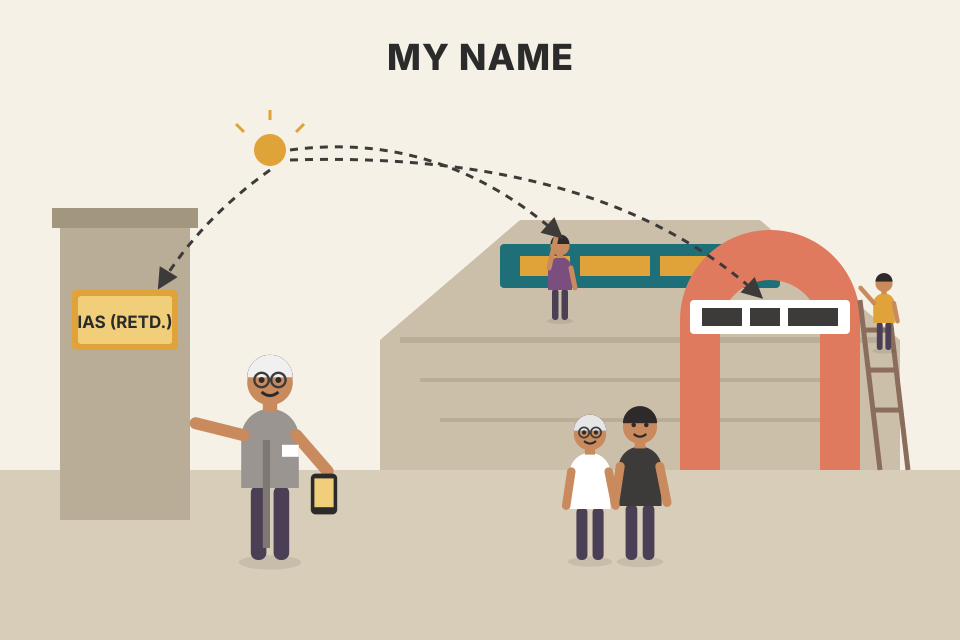
A retired IAS officer in Delhi still has "Shri X, IAS (Retd.)" on his nameplate, his visiting card and his WhatsApp profile, twenty years after retirement. A cricket legend insists the new stadium stand carry his name. A businessman donates a hall to his old college on condition that his father's name goes on the arch in letters a foot high.
Where it breaks: some titles and names do useful work (they tell you whom to call, or honour a real contribution). The point is not that titles are bad, but that the urge behind them never fully switches off, however much someone has already achieved.
What's happening behind it
The book's explanation: success does not satisfy the hunger for importance; it often sharpens it. A name, a title, an honour is a public, lasting sign that someone matters.
Beyond the book: psychologists call this the hedonic treadmill: we adapt to each new level of status and soon want the next one. It is why recognition has to keep coming; one big award does not last a career.
At work
Titles matter more to engineers than they admit: "Staff", "Principal", "Tech Lead", "owner" in the CODEOWNERS file. When you assign ownership, name it publicly ("Priya owns the search indexer from this sprint"). When a feature ships, credit people by name in the release note. When you reorganise teams, be careful with anyone whose title is quietly shrinking; Catherine the Great would not open the letter, and they may stop opening yours.
Connects to
A person's name is to them the sweetest sound: Part Two, Ch.3.
Giving people titles and authority to win cooperation: Part Four, Ch.9.
07 · THE HUNGER GONE WRONG
Illness and insanity: when people find importance in being looked after
pdf p41–42
Carnegie's darkest evidence: some people, he says, become invalids to win sympathy and attention, and so a feeling of importance. Some, by the medical views he reports, may even go insane to find it.
Mrs. McKinley. The wife of President William McKinley, Carnegie says, fed her hunger for attention by keeping her husband at her bedside for hours when state business was waiting, and made a scene when he once had to leave her at the dentist to meet his Secretary of State, John Hay.
The ten-year invalid. The novelist Mary Roberts Rinehart told Carnegie about a bright, energetic young woman who, when she had to face something hard (her age, perhaps, and lonely years ahead with little to look forward to), took to her bed. For ten years her elderly mother climbed to the third floor and back with trays, nursing her. Then the worn-out mother lay down and died. The "invalid" drooped for a few weeks, then got up, got dressed, and went back to living.
Insanity: the claims he reports.
In the US of his time, he says, more patients suffered from mental illness than from all other diseases combined.
About half of mental illness could be traced to physical causes: brain lesions, alcohol, toxins, injuries, and diseases like syphilis that destroy brain cells.
The other half, the "appalling part" in his words, showed no physical damage: their brain tissue looked healthy under the microscope after death.
He asked the head physician of a leading psychiatric hospital why such people became insane. The doctor said frankly that nobody knows for sure, but that many find in insanity the feeling of importance that real life denied them.
"Lady Smith". The doctor described a patient whose loveless marriage had left her with no affection, no children and no social standing. In her delusion she had escaped all of it: she now believed she had married into the English aristocracy, insisted on being called Lady Smith, and told him on every visit that she had given birth the night before.
The doctor's view. He told Carnegie that even if he could reach out and restore her sanity, he would not: she was much happier as she was.
Carnegie's turn. If some people are so hungry for importance that they will lose their minds to get it, imagine what we could achieve by giving people honest appreciation this side of insanity.
"this side of insanity"Carnegie (pdf p42)
Beyond the book: read this plate as 1936, not as medicine
The psychiatry here is of its time and much of it would not be accepted today. Modern psychiatry does not see serious mental illness (schizophrenia, bipolar disorder, severe depression) as a choice or a way to seek importance; it involves brain chemistry, genetics, trauma and stress, much of which cannot be seen with a microscope after death. The statistic about mental patients outnumbering all others referred to hospital beds in long-stay asylums, not to how common illness was. And a doctor saying he would not cure a patient would be an ethical failure now. What still holds is the narrower point: people deprived of love and recognition suffer, and attention-seeking through illness (sometimes unconscious) is a real, recognised pattern.
Dated framing. The two invalid stories are both about women, which reflects 1930s assumptions. The pattern (getting care and attention through being ill) is not tied to gender; a modern example might be anyone whose illness becomes the only time the family gathers round them.
Picture it
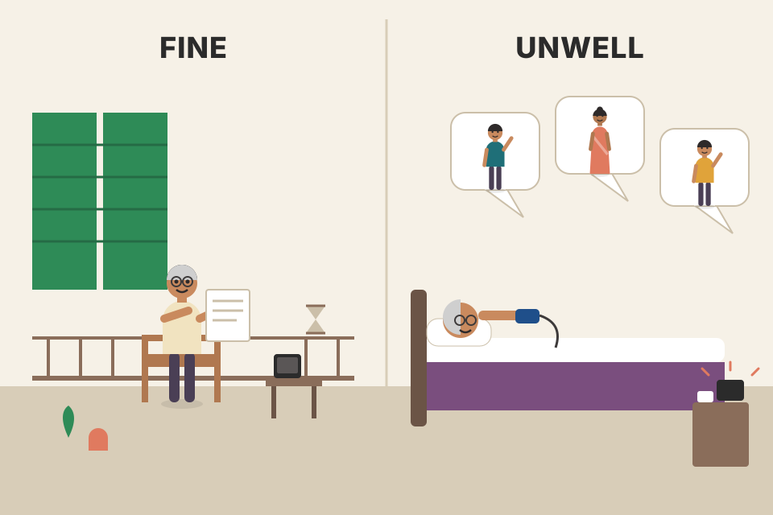
A retired grandfather in Kolkata, whose children all moved to Bengaluru and Pune, finds that the only time they phone every day is when his blood pressure "acts up". He is not lying; he really does feel worse. But nobody calls when he is fine. Without anyone planning it, illness has become the one reliable way to matter.
Where it breaks: in most cases illness is just illness, and suspecting someone of "wanting attention" can be cruel and wrong. Carnegie's stories are about rare cases; the useful lesson is to give attention freely before someone needs to be ill to get it.
What's happening behind it
The book's explanation: the hunger for importance is so strong that, denied any healthy outlet, it will find an unhealthy one: sympathy, a fantasy title, an imaginary family.
Beyond the book: loneliness research (for example John Cacioppo's work) links chronic social isolation with worse physical and mental health. The arrow runs both ways: being unseen hurts, and being ill draws people closer. That supports Carnegie's practical conclusion without needing his 1930s explanation of insanity.
At work
A mild office version: the teammate whose only moments of visibility are crises. They are the hero of every 2 a.m. incident and invisible the rest of the time. If firefighting is the only work that gets praised, you will get more fires (and sometimes the same person keeps being "needed" for them). Praise the quiet, preventive work too: the alert that was tuned, the migration that went smoothly because of good planning.
Connects to
Sympathy for the other person's ideas and desires: Part Three, Ch.9.
08 · THE MILLION-DOLLAR MANAGER
Charles Schwab: paid a fortune not for knowing steel, but for handling people
pdf p43–44
salary over $1,000,000 a yearover $3,000 a dayfirst president of U.S. Steelage 38
The man. Charles Schwab was one of the first people in American business paid more than a million dollars a year, at a time with no income tax, when fifty dollars a week was a comfortable wage. Andrew Carnegie (the steel magnate, no relation to the author) picked him to be the first president of the newly formed United States Steel Company. Schwab later left to take over the struggling Bethlehem Steel and turned it into one of the most profitable companies in America.
Why so much money? Carnegie asks: was Schwab a genius? Did he know more about making steel than anyone else? No. Schwab told Carnegie himself that many of his employees knew more about steel than he did. He said he was paid mainly for his ability to deal with people.
His secret, in short. Schwab said his greatest asset was being able to make his people enthusiastic, and that the way to bring out the best in someone is appreciation and encouragement. Nothing, he said, kills a person's ambition like criticism from those above them. So he never criticized anyone; he believed in giving people a reason to work, was eager to praise and slow to find fault, and when he liked something he said so warmly and generously.
"hearty in my approbation and lavish in my praise"Charles Schwab, quoted by Carnegie (pdf p43)
Carnegie is so taken with these words that he says they should be cast in bronze and hung in every home, school and office, and memorised by children in place of Latin verbs or Brazil's annual rainfall.
What most people do instead: the opposite. When they dislike something, they tear into their staff. When they like something, they say nothing. Carnegie quotes an old two-line rhyme: the one time I did wrong I heard about forever; the two times I did right I never heard a word.
Schwab's evidence. He said that in a lifetime of meeting many people, including great people all over the world, he had never found anyone, however high their position, who did not do better work and try harder when approved of than when criticized.
Beyond the book: the date
The book says Schwab became U.S. Steel's first president "in 1921", aged 38. U.S. Steel was actually formed in 1901, and Schwab (born 1862) was 39 that year. The 1921 is almost certainly a slip in this edition. The million-dollar salary is also often described as including bonuses rather than a flat wage.
Rewrite it
Each message is the "average manager" pattern: silent on the good, loud on the bad. Decide how Schwab would write it, then reveal a rewrite and what changed.
Picture it
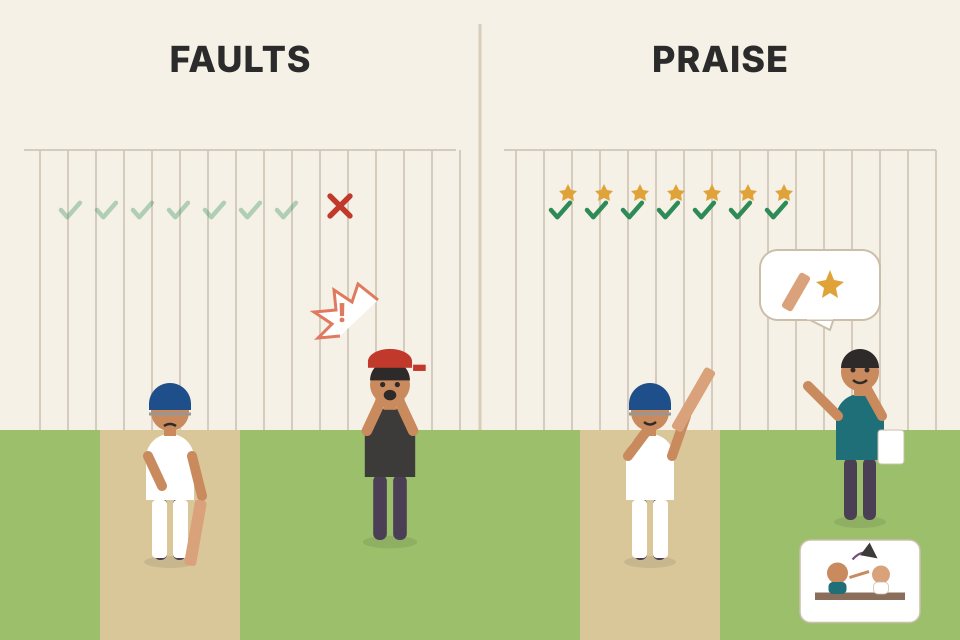
Two cricket coaches at a Mumbai academy. One watches a teenager play forty good shots, says nothing, then shouts across the ground at the forty-first, a mistimed pull. The other calls out "Lovely cover drive!" every time it is earned, and at the end of the session mentions the pull quietly: "Let's work on that one tomorrow." Ask which academy produces more players who still love the game at twenty.
Where it breaks: praise that is handed out for everything stops meaning anything. Schwab was "lavish" about things he genuinely liked; the coach still has to be honest about which shots were good.
What's happening behind it
The book's explanation (through Schwab): criticism from a superior kills ambition; approval releases effort. People will work harder to keep earning praise than to avoid blame.
Beyond the book: Gallup's large workplace surveys repeatedly find that recognition is one of the strongest predictors of engagement, and that most employees say they get too little of it. Research on feedback also shows that specific praise ("the retry logic handles the timeout case cleanly") teaches far more than general praise ("great job"), because it tells people exactly what to repeat.
At work
Check your own review history. On most teams, PR comments are almost entirely about problems; an approved PR gets a bare "LGTM". That is the couplet in code: wrong once and everyone hears about it, right twice and nobody says a word. Try adding one specific, honest line of praise to every review you approve.
Interview angle. "Describe your leadership style" or "How do you get the best out of your team?" Schwab's two ideas give a crisp answer: make good work visible and specific when it happens, and keep correction private and encouraging.
Connects to
Begin with praise and honest appreciation before any correction: Part Four, Ch.1. Praise every improvement: Part Four, Ch.6.
Schwab appears again in Part Three, Ch.12, chalking a number on a mill floor.
09 · TWO TYCOONS
Andrew Carnegie's epitaph, and Rockefeller finding praise in a million-dollar loss
pdf p44
Andrew Carnegie. Schwab said appreciation was one of the main reasons for Andrew Carnegie's extraordinary success. Carnegie praised his associates both in public and in private. He even wanted to praise them on his own gravestone: he drafted an epitaph describing himself as a man who knew how to gather around him people cleverer than he was.
"… one who knew how to get around him men who were cleverer than himself."Andrew Carnegie's self-written epitaph, quoted by Carnegie (pdf p44)
John D. Rockefeller. Sincere appreciation was also one of the secrets of the elder Rockefeller's skill with people. Step through his best-known example:
Step through the story
Picture it
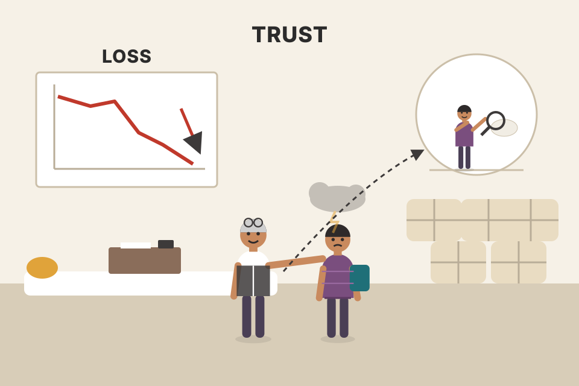
A textile trader in Surat sends his nephew to buy cotton in Gujarat's interior. Prices crash after the deal and the firm loses ₹40 lakh on a ₹1 crore purchase. The nephew comes back expecting to be shouted out of the shop. The uncle says: "You saved sixty lakh in a market where half of Surat lost everything. I've done worse myself." The nephew becomes the most careful buyer the firm ever had.
Where it breaks: this only works because the uncle knows the nephew truly did his best. If the loss came from carelessness or a kickback, praise would be a cover-up. Rockefeller's "the incident was closed" rested on that judgement.
What's happening behind it
The book's explanation: Rockefeller knew Bedford had done his best, so criticism would add nothing but hurt. By looking for something honestly praiseworthy (the 60% saved), he kept a capable partner's pride and loyalty intact. Andrew Carnegie's epitaph shows the same attitude: give credit to the people around you, even when the credit could be yours.
Beyond the book: researchers on teams (Amy Edmondson's work on psychological safety) find that teams where people are not punished for honest mistakes report more errors, learn faster and perform better, because problems surface early instead of being hidden.
At work
A risky bet fails: a migration rolled back, an experiment that lost conversion, a vendor that went bust. If the person made a reasonable call with what they knew, find the true thing to praise ("you set up the rollback plan, which is why this took one hour and not one day") and close it. Then fix the process in a blameless review. You keep the person willing to take the next sensible risk.
Interview angle. "Tell me about a time a project you led failed." Interviewers listen for whether you blamed or protected your people. "We lost X, but because Y had built the kill switch we contained it in an hour" shows Rockefeller's instinct.
Bob Hoover's trust in the mechanic who nearly killed him: Ch.1, plate 12.
10 · AT HOME
A plate of hay, a study of runaway wives, and six red roses
pdf p44–45
Carnegie moves from tycoons to the kitchen table, with three short pieces.
1. The plate of hay (a story he says never happened). Carnegie admits this one, from his clippings, is made up, but he tells it because it shows something true. A farm woman, after a hard day, served the men of her family a heap of hay for dinner. When they angrily asked if she had gone mad, she said she had no idea they would notice: she had cooked for them for twenty years and never heard a word to suggest they knew they weren't eating hay.
2. Runaway wives. A study (Carnegie gives no source) of why wives left home found the main reason was a lack of appreciation. He bets a study of runaway husbands would find the same. We take our partners so much for granted that we never tell them we value them.
3. Six red roses. A man in one of Carnegie's classes said his wife, as part of a self-improvement group at her church, asked him to list six things she could do better. A list of complaints would have been easy to write. Instead he asked for a night to think, and in the morning had six red roses delivered with a note saying he loved her as she was and could not think of six things to change. She greeted him that evening close to tears, and when she told her group, the other women said it was the kindest thing they had heard of. That, he said, taught him the power of appreciation.
"I love you the way you are."The husband's note with the roses, as told by Carnegie (pdf p45)
Dated framing. "Runaway wives", the farm wife cooking for "her menfolks", and a church assignment on being a "better wife" all reflect 1930s–70s roles. The modern version is any long relationship: partner, parent, flatmate, the colleague who has done the team's thankless chores for years. The lesson is unchanged: what people do for us every day is the easiest thing to stop seeing.
Reflect, then reveal
Think of someone close (partner, parent, sibling, a long-time teammate). Suppose they asked you for six things they could do better. Write the first answer that comes to mind. Nobody sees this; it is not saved.
Picture it
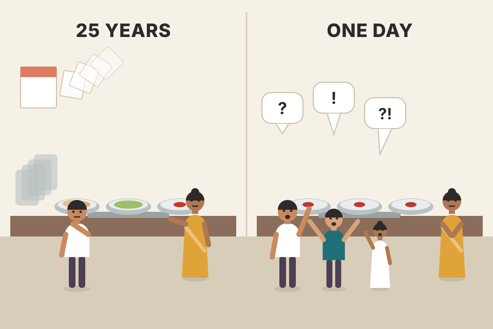
In many Indian homes the mother has packed the same tiffin every morning for twenty-five years: two rotis, sabzi, a bit of pickle. Nobody comments unless the salt is off. One day she packs only the pickle, and the whole family suddenly has opinions. That is the hay story with a dabba.
Where it breaks: the hay was a protest the woman chose; most people who feel taken for granted never protest at all. They just quietly stop trying, or leave. That is the runaway-wives finding, and it is why you should not wait for the hay.
What's happening behind it
The book's explanation: familiarity makes us blind. Daily effort becomes background, and only failures stand out. Appreciation pulls the effort back into view.
Beyond the book: relationship researcher John Gottman found that stable couples have about five positive interactions for every negative one during conflict, and that habits of noticing and thanking (what he calls building a "culture of appreciation") predict whether couples stay together. Studies by Sara Algoe link expressed gratitude between partners with stronger, longer relationships.
At work
Every team has someone serving hay without knowing it: the person who keeps the CI green, updates the on-call runbook, answers every "how do I set up my laptop" question. Their work is noticed only on the day it stops. In your next retro or team update, name one piece of invisible maintenance work and the person who does it.
The six-roses move also works when a teammate asks "what should I improve?" in a 1:1. You still owe them honest feedback (a lead who only says "nothing, you're perfect" is failing them), but start by telling them, specifically, what you would not change.
Connects to
Give the other person a fine reputation to live up to: Part Four, Ch.7.
"Father Forgets", the same blindness with a child: Ch.1, plate 13.
11 · FOOD FOR THE SELF
Ziegfeld's roses, a six-day fast, and "nourishment for my self-esteem"
pdf p45–46
Florenz ZiegfeldBroadway, the Follies$30 → up to $175 a week
Ziegfeld. Florenz Ziegfeld, the most dazzling producer on Broadway, built his fame on his promise to glorify the American girl. Again and again he took young women nobody had looked at twice and, on stage, made them seem glamorous and mysterious. He knew what appreciation and confidence could do, and made women feel beautiful through sheer courtesy and attention. He was practical about it too: he raised chorus girls' pay from $30 a week to as much as $175. And on opening nights of the Follies he sent telegrams to his stars and flooded every chorus girl with American Beauty roses.
Dated wording. The book describes the performers in unflattering 1930s showbusiness language (plain girls turned into seductive visions) and leans on looks throughout. The lesson worth keeping is the combination: Ziegfeld backed his compliments with real money and real attention to every member of the cast, not only the stars.
The six-day fast. Carnegie once tried a fashionable fast and went six days and nights without food. It was not hard; by the end of the sixth day he was less hungry than at the end of the second. His point: many people would feel like criminals if they let their family or staff go six days without food. Yet they let them go six days, six weeks, sometimes sixty years without the warm appreciation that people crave almost as much as food.
"There is nothing I need so much as nourishment for my self-esteem."Alfred Lunt, actor, quoted by Carnegie (pdf p46)
Alfred Lunt, one of the great actors of his day, said this while starring in Reunion in Vienna. Carnegie draws the comparison: we feed the bodies of our children, friends and employees (he says roast beef and potatoes) but rarely feed their self-esteem, though kind words of appreciation can stay in a person's memory for years.
Picture it
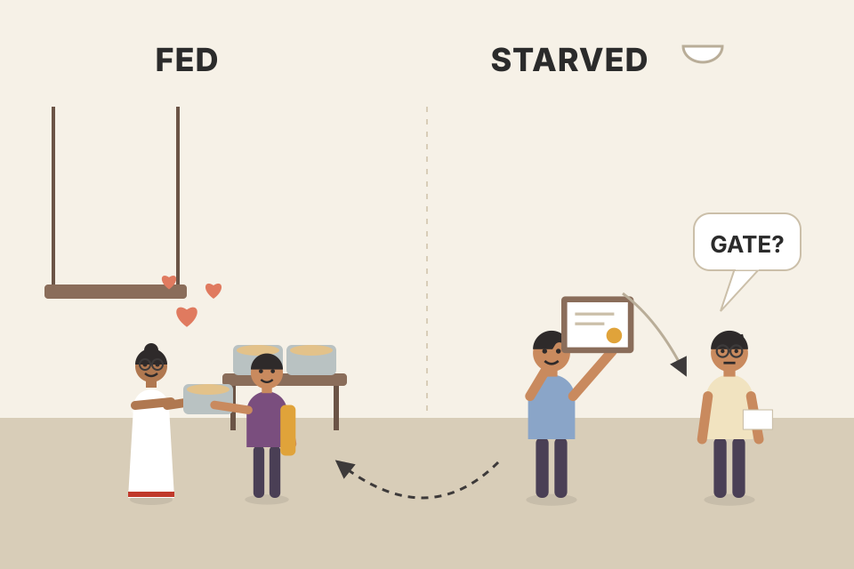
A Gujarati household where the grandmother is horrified if a guest leaves without eating, and every visiting cousin goes home with a box of thepla. In that same house, the son who has topped his engineering college gets "Hmm, what about the GATE score?" Bodies are fed with great love; self-esteem is put on a fast.
Where it breaks: in many families food is the language of appreciation, and the thepla means "we're proud of you". Carnegie's point still stands: people also need to hear it in words, because food can be read as duty rather than recognition.
What's happening behind it
The book's explanation: appreciation is a form of nourishment. Like food, it is needed regularly; unlike food, its absence does not show on the body, so we hardly notice when we are starving someone of it. Ziegfeld shows the full meal: attention, kind words and a material sign (pay, flowers) that the words are meant.
Beyond the book: the "nourishment" metaphor fits research on self-esteem as a need: people deprived of social approval show stress responses similar to other deprivations, and small acts of recognition measurably lift mood and effort (for example, studies by Adam Grant and Francesca Gino in which a short thank-you from a manager increased fundraising calls by about half).
At work
Ziegfeld's two halves map to work cleanly. The "chivalrous" half: the launch-night message to every person who shipped, not just the tech lead. The "practical" half: making sure appreciation shows up in promotions, pay and project choice, because words that never turn into anything start to sound hollow. A team that hears "great work!" every sprint but sees promotions go elsewhere will stop believing the words.
Connects to
Praise the slightest improvement, and every improvement: Part Four, Ch.6.
12 · ONE ACT, ONE LIFE
Stevie Morris finds the lost mouse
pdf p46 · footnote p50
Detroit classroomtold by Paul Harvey, "The Rest of the Story"source: Aurandt, 1977
The story. On his radio programme "The Rest of the Story", Paul Harvey told how sincere appreciation changed a life. Years earlier, a teacher in Detroit asked a boy named Stevie Morris to help her find a mouse that had got loose in the classroom. She did it because she valued something about him that no one else in the room had: Stevie was blind, and nature had given him remarkable hearing in compensation.
Why it mattered. It was the first time anyone had shown real appreciation for those ears. Years later, he said that moment was the beginning of a new life. From then on he developed his gift for hearing, and went on, under the stage name Stevie Wonder, to become one of the great singers and songwriters of the 1970s.
The source. Carnegie's footnote (pdf p50) credits the story to Paul Aurandt, Paul Harvey's The Rest of the Story (Doubleday, 1977), edited and compiled by Lynne Harvey.
Beyond the book: a note on the facts
Stevie Wonder was born Stevland Hardaway Judkins (later Morris) in 1950 and grew up in Detroit, where he was signed by Motown at eleven. Paul Harvey's stories were known for their dramatic shaping, so treat the "first time ever" framing as storytelling; the essential fact (a teacher noticing and using his gift) is the point.
Picture it
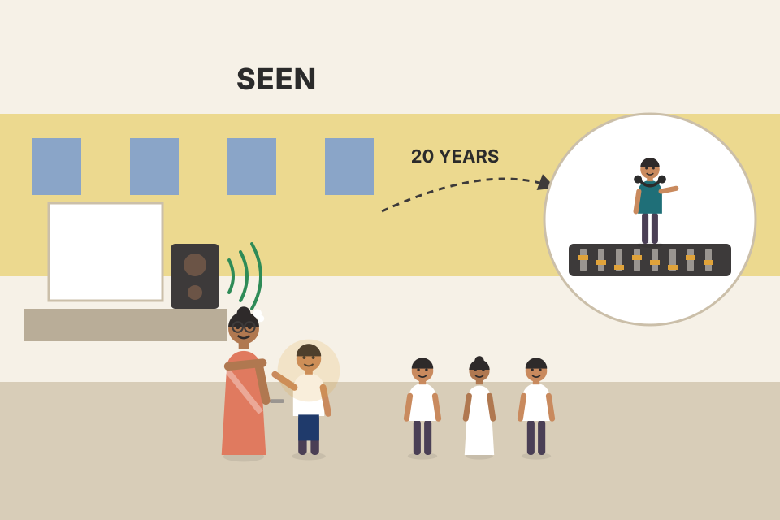
A quiet Class 6 student in a government school in Madurai is known only as "the one who never speaks". One day the projector's audio dies before an assembly and the teacher remembers he fixed his uncle's radio. "Can you look at it? I think you're the only one here who would know." He fixes it in five minutes. Twenty years later he runs an audio engineering studio and still tells that story.
Where it breaks: one moment of recognition rarely creates a career on its own; Stevie Wonder had extraordinary talent and years of work. What the moment can do is point someone at their gift and tell them it is valued, which is often what was missing.
What's happening behind it
The book's explanation: the teacher did not flatter Stevie or praise him vaguely. She noticed a real, specific ability and gave it an honest use. That is the difference between appreciation and the empty praise discussed next.
Beyond the book: this is close to what psychologists call strengths-based feedback: people grow fastest when someone notices what they are already good at and gives them chances to use it, rather than only working on weaknesses. The Pygmalion effect studies (Rosenthal and Jacobson, 1968) found that teachers' expectations of pupils can shape how those pupils perform.
At work
Look for each team member's "ears": the one who can read a flame graph faster than anyone, the one who writes clear incident updates, the one who gets on well with difficult clients. Then, like the teacher, ask them to use it in front of others: "You're the best at reading these profiles, can you take a look at this one with us?" It is appreciation that comes with a job attached, so it never feels like flattery.
Interview angle. "Tell me about someone you helped grow." Describe noticing a specific strength and creating a chance to use it, and what happened next.
Connects to
Give the other person a fine reputation to live up to: Part Four, Ch.7.
13 · THE OBJECTION
"Isn't this just flattery?" Appreciation versus counterfeit praise
pdf p46–47
Carnegie expects the sceptical reader to scoff: this is flattery, buttering people up, and it doesn't work on intelligent people. He agrees, about flattery.
What he says about flattery.
It rarely works with perceptive people. It is shallow, selfish and insincere, and it should fail, and usually does.
Some people are so starved of appreciation that they will swallow anything, the way a starving man will eat grass and worms. That is a sign of hunger, not proof that flattery is good.
Disraeli and Queen Victoria. Even Queen Victoria was open to flattery. Prime Minister Benjamin Disraeli admitted he laid it on thick with her; he said he spread it on "with a trowel". But Disraeli was one of the most polished and skilful men who ever ran the British Empire, a genius at it. What worked for him, Carnegie warns, would not necessarily work for you or me.
In the long run flattery does more harm than good. It is counterfeit: like fake money, pass it on and sooner or later it gets you into trouble.
The difference, in four pairs. Carnegie says it is simple:
Appreciation
Flattery
Honesty
Sincere
Insincere
Where it comes from
From the heart
From the teeth (said, not meant)
Whom it serves
Unselfish: about them
Selfish: about what you want
How it is seen
Admired everywhere
Condemned everywhere
Four more warnings he collects.
General Álvaro Obregón of Mexico: Carnegie saw a bust of him in Chapultepec Palace, carved with his advice not to fear enemies who attack you, but to fear friends who flatter you.
King George V kept six maxims on the wall of his study at Buckingham Palace. One asked to be taught neither to offer nor to accept cheap praise. That, Carnegie says, is all flattery is.
A definition he once read: flattery is telling people exactly what they already think about themselves.
Ralph Waldo Emerson: whatever words you use, you can only ever say what you are. In other words, insincerity shows.
"Teach me neither to proffer nor receive cheap praise."One of King George V's six maxims, quoted by Carnegie (pdf p47)
"A new way of life". Carnegie protests (three times "No!") that he is not recommending flattery. He is describing a new way of life, and repeats the phrase for emphasis. If flattery were all it took, he notes, everyone would have caught on and we would all be experts at human relations.
Where real appreciation comes from: the 95% problem. When we are not working on a specific problem, Carnegie says, we spend about 95 percent of our time thinking about ourselves. If we stop that for a while and start thinking about other people's good points, we will not need flattery, which is so cheap and false it can be spotted almost before it is said.
Appreciation or flattery?
Decide, then see why.
Picture it
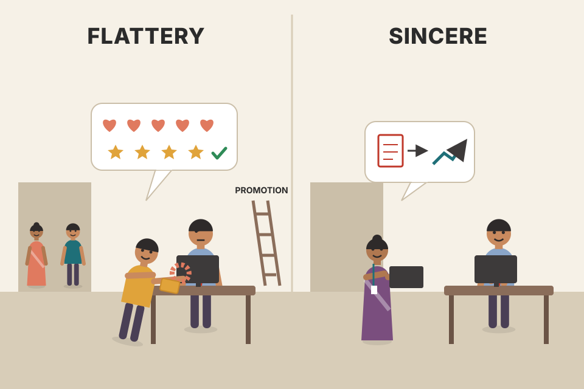
Every Indian office knows the chamcha: the person who tells the boss each morning that his tie is sharp, his idea brilliant, his joke the best ever, and who happens to want the next promotion. Everyone, including the boss in his saner moments, can tell. Compare the colleague who says, once a quarter, "That framing you used with the client yesterday, turning their complaint into a roadmap item, I'm going to steal it." Nobody calls that chamchagiri.
Where it breaks: a sincere compliment can still be read as flattery if it comes from someone who wants something, which is why the habit (praising people who can do nothing for you, too) matters as much as each sentence.
What's happening behind it
The book's explanation: flattery is aimed at what you want; appreciation is aimed at something real in them. People detect the aim. The cure is not better wording but a change of attention, away from ourselves (the 95%) and toward the other person's genuine good points.
Beyond the book: research on ingratiation (Edward Jones, 1964, and later meta-analyses) finds flattery does often work on the person flattered, who tends to believe it, but onlookers see through it quickly and think less of the flatterer. That fits Carnegie and Obregón both: it may please the target, but it costs you everyone else's trust, and eventually theirs.
At work
Three tests before you praise: Is it true? (Would you say it if they could not hear?) Is it specific? ("The rollback plan in section 4" rather than "great doc".) Would you say it to someone with no power over you? If you only compliment your skip-level, it is flattery even when every word is true.
Interview angle. When an interviewer asks "How do you build relationships with stakeholders?", avoid answers that sound like managing up through charm. Describe noticing their real constraints and wins and acknowledging them, e.g. crediting the PM's research in the launch note.
Connects to
Make the other person feel important, and do it sincerely: Part Two, Ch.6.
Become genuinely interested in other people (the cure for the 95%): Part Two, Ch.1.
14 · EVERYDAY LIFE
The most neglected virtue: report cards, birdhouses, the chef and the tired salesperson
pdf p47–48
Carnegie calls appreciation one of the most neglected virtues of daily life, and gives small, ordinary chances to practise it:
Children. We forget to praise a son or daughter for a good report card, or to encourage them the first time they bake a cake or build a birdhouse. Nothing pleases children more than a parent's interest and approval.
The chef. Next time you enjoy a fine steak at the club, send word to the kitchen that it was excellently cooked.
The salesperson. When a tired shop assistant is unusually courteous to you, mention it.
Speakers. Every minister, lecturer and public speaker knows the discouragement of pouring themselves into a talk and hearing not one word of appreciation afterwards.
Everyone else, doubly. What is true of professionals is twice as true of people in offices, shops and factories, and of our families and friends. Never forget that the people around us are human beings who are hungry for appreciation.
"It is the legal tender that all souls enjoy."Carnegie on appreciation (pdf p48)
A trail of sparks. His suggestion: leave a friendly trail of small sparks of gratitude on your daily rounds. You will be surprised, he says, how they light small fires of friendship that are glowing when you next pass that way.
Modern equivalent. "Filet mignon at the club" was Carnegie's middle-class American example. Today: the delivery rider who climbed four floors in the rain, the IT person who fixed your laptop before your demo, the five-star review that names the waiter.
Self-audit: this week, did I…
Picture it
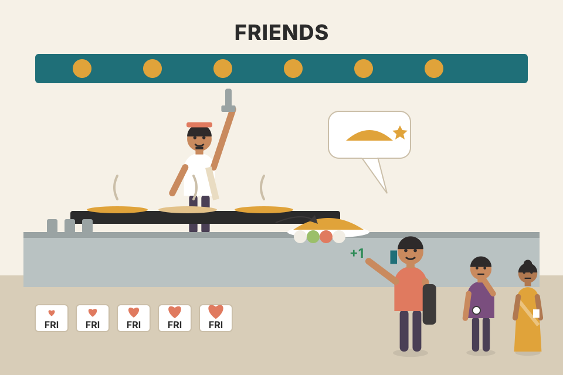
A regular at a Bengaluru darshini tells the man at the dosa tawa, every Friday, that his masala dosa is the crispest in Jayanagar. Within a month, his dosa arrives first, a little extra chutney appears without asking, and the cook waves when he walks in. A few words a week bought a friendship along his daily route.
Where it breaks: if he praised the dosa only to get the extra chutney, it would be flattery and the cook would sense it soon enough. The sparks work because they are given for their own sake; the friendship is a side effect, not the price.
What's happening behind it
The book's explanation: these are tiny moments where someone has made an effort that is normally invisible. Noticing it feeds the hunger for importance at almost no cost, so the return on a few words is huge.
Beyond the book: experiments by Amit Kumar and Nicholas Epley (2018) found that people who wrote short thank-you notes consistently underestimated how happy the recipient would feel and overestimated how awkward it would be. In other words, most of us hold back appreciation because we misjudge its value, which is exactly Carnegie's "neglected virtue".
At work
The speakers point is made for engineering teams. After a colleague's tech talk, design review or demo, most people close the call and move on. Send one line: "Your section on idempotency keys finally made it click for me." Do the same for the people outside the engineering spotlight: the recruiter who sent great candidates, the support agent whose bug report had perfect reproduction steps, the office admin who fixed the meeting room.
Connects to
Smile, and the first impression it makes: Part Two, Ch.2.
Be a good listener (the speaker's hunger for a response): Part Two, Ch.4.
15 · A MODERN CASE
Pamela Dunham and the janitor everyone mocked
pdf p48
Pamela DunhamNew Fairfield, Connecticutsupervisor
The situation. Part of Pamela Dunham's job was supervising a janitor whose work was very poor. The other employees mocked him and deliberately dropped litter in the corridors to show how bad he was. It got so bad that the shop was losing productive time.
What failed. Pam tried several ways to motivate him. None worked.
What she noticed. Now and then he did one particular job especially well.
The move. Each time, she made a point of praising him for it in front of the others.
The result. His work improved day by day across the board, and before long he was doing all of it efficiently. Now he does an excellent job, and the other employees give him appreciation and recognition too.
Carnegie's comment: honest appreciation succeeded where criticism and ridicule had failed.
Picture it
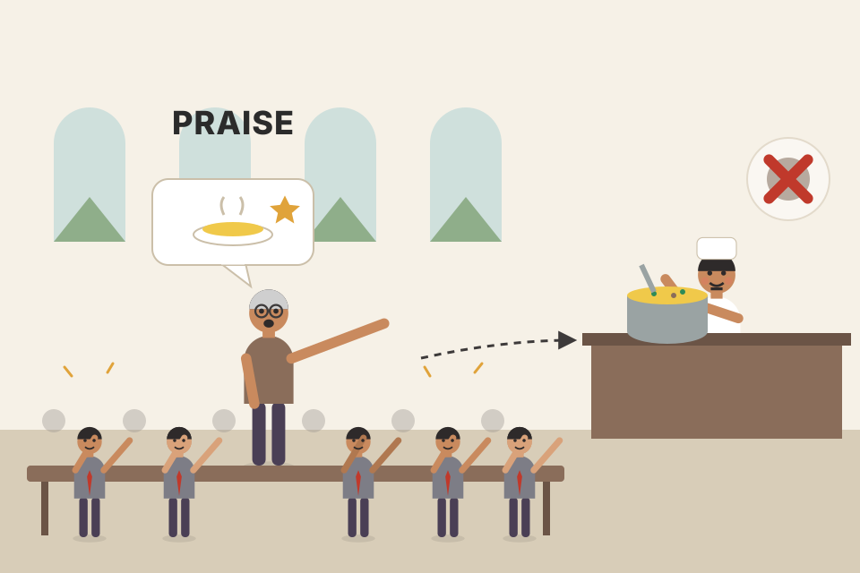
In a school hostel in Dehradun, the mess helper is the butt of every joke because the rotis are often burnt. The warden notices that his poha on Sunday is actually excellent, and says so loudly at breakfast in front of a hundred boys. The following week the rotis are better too, and the boys start thanking him on their way out.
Where it breaks: public praise worked here because it was for something genuinely good and it reversed a public humiliation. If the work had been poor because of illness or impossible workload, praise alone would not fix it; you would need to fix the cause too.
What's happening behind it
The book's explanation: ridicule confirmed the janitor's low status and gave him no reason to try. Praise for the few things he did well gave him a feeling of importance, and he wanted more of it, so he did more good work. Because it was public, it also changed how his colleagues saw him.
Beyond the book: this is shaping in behavioural psychology (Skinner, whom Carnegie cited in Ch.1): reward the closest approximation to the behaviour you want, and the behaviour grows toward the target. Public praise also resets the group's expectations, which in turn shape behaviour (the Pygmalion effect again).
At work
A struggling teammate has become the team joke: their tickets bounce, people sigh in stand-up when they speak. Find the one thing they did well this week (a clear bug report, a test that caught a regression) and call it out in the team channel or retro. Do it again next time. You are not hiding the problems; you are giving them, and the team, a different story to build on. Pair it with private, practical help on the weak areas.
Interview angle. "Tell me about a time you turned around an underperformer." Pam's sequence makes a clean STAR answer: situation (poor work, team mockery, lost time), what failed, what you noticed, the public appreciation, the measurable result.
Connects to
Praise the slightest improvement and every improvement: Part Four, Ch.6.
Criticism and ridicule as the failing alternative: Ch.1.
16 · THE CLOSE
You pass this way only once: Principle 2
pdf p48–50
No need to hurt people. Carnegie states it flatly: hurting people does not change them, and it is never called for.
The saying on his mirror. He had cut out an old saying and pasted it to his mirror, where he could not avoid seeing it every day. In short: we pass through this life only once, so any good we can do or kindness we can show to anyone, we should do now, not put off or neglect, because we will not come this way again.
Emerson's humility. Emerson said that every person he met was his superior in some way, and in that way he could learn from them. Carnegie's reasoning: if that was true for Emerson, it is likely a thousand times truer for us.
"Every man I meet is my superior in some way."Ralph Waldo Emerson, quoted by Carnegie (pdf p48)
The method, in four steps.
Stop thinking about our own achievements and wants.
Try to work out the other person's good points.
Forget flattery.
Give honest, sincere appreciation, and be warm and generous with it (Schwab's "hearty" and "lavish" again).
The promise. Do this, Carnegie says, and people will cherish your words and repeat them for the rest of their lives, years after you yourself have forgotten saying them.
Principle 2
Give honest and sincere appreciation.
The footnote (pdf p50). The chapter's last page holds only the source for the Stevie Wonder story: Paul Aurandt, Paul Harvey's The Rest of the Story (Doubleday, 1977), edited and compiled by Lynne Harvey (see plate 12).
Picture it
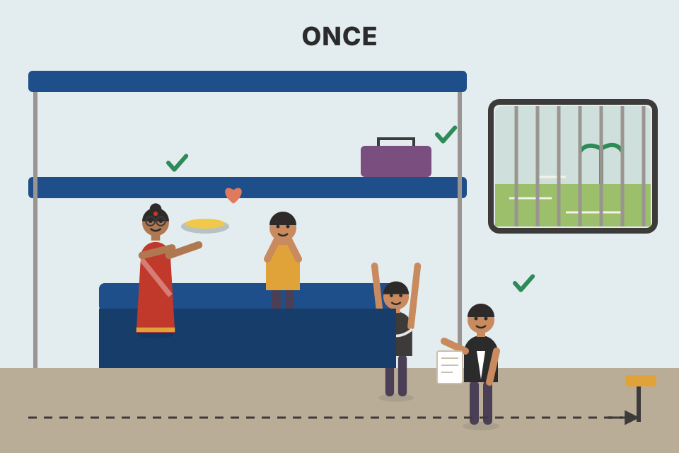
On a long train journey from Delhi to Chennai, you share a compartment for 36 hours with strangers you will never see again. The auntie who shares her lemon rice, the student who helps you with your bag, the TTE who sorts out your berth. Thanking each of them properly costs nothing, and you will never get another chance. That is the "pass this way but once" saying on a sleeper coach.
Where it breaks: at work and at home you do pass the same way again, every day. That cuts both ways: missed appreciation can be made up tomorrow, but it also means the habit, or its absence, compounds for years.
What's happening behind it
The book's explanation: appreciation is not a technique bolted on top of self-interest; it comes from a shift of attention. Emerson's line gives the reason to look for good points (there is always something to learn from someone), and the mirror saying gives the urgency (do it now).
Beyond the book: Carnegie's promise that people will remember your words for life matches the finding that people recall specific, emotionally meaningful praise for decades; teachers' and managers' single comments are a common theme in studies of career turning points. It is the positive mirror of the Ch.1 point that one stinging criticism can last a lifetime.
At work
Use Emerson's line as a working habit: before a 1:1, write down one thing this person is better at than you. Before a design review, one thing in the proposal that is better than what you would have done. You will walk in looking for strengths, and your appreciation will be specific because you prepared it.
Worked example: three ways to answer a demo
A teammate demos the new search filters at the sprint review. You are asked for comments.
Silence, criticism, or flattery
"Looks fine. The loading spinner is a bit slow." (the average manager)
"Wow, amazing, you're a rockstar!" (cheap praise: vague, could be said about anything)
Honest, sincere appreciation
"Keeping the filters in the URL so people can share a search is a really thoughtful touch; support has been asking for that for months. I'd like to see if we can do the same on the orders page. On the spinner, want to look at it together?"
Specific, true, tied to its real effect, and the one concern is still raised, as an invitation.
One way only. Force (revolver, threat of firing, whip) gets compliance while you watch, with bad side effects. The only lasting way to get someone to do something is to make them want to.
What people want. Eight things: health, food, sleep, money, life after death, sex, children's well-being, and a feeling of importance. The first seven are mostly met; the eighth rarely is. Freud: the desire to be great. Dewey: the desire to be important. James: the craving to be appreciated.
How strong it is. It separates us from animals (the hogs didn't care about the ribbons; Father did) and built civilization: Lincoln's law books, Dickens, Wren, Rockefeller's millions. It also drives showing off and youth crime (Mulrooney). Even the great wanted titles and honours (Washington, Columbus, Catherine, Mrs. Lincoln, Byrd's donors, Hugo, Shakespeare). Some people, Carnegie reports, found it through illness (Mrs. McKinley, Rinehart's invalid) or insanity ("Lady Smith"), a 1930s view to read with care.
Character. How you get your feeling of importance shows who you are: Rockefeller's Peking hospital vs Dillinger's "I'm Dillinger!"
Proof that appreciation works. Schwab was paid over $1M a year for arousing enthusiasm through appreciation and encouragement, never criticism. Andrew Carnegie praised associates publicly and privately, even in his epitaph. Rockefeller praised Bedford for saving 60% of a lost investment. The hay story, the runaway-wives study and six red roses at home. Ziegfeld raised pay from $30 to $175 and sent roses. Stevie Morris's teacher valued his hearing. Pamela Dunham's public praise turned around a mocked janitor.
Not flattery. Flattery is shallow, selfish, insincere, counterfeit; it fails with discerning people (Disraeli was an exception you are not). Appreciation is sincere, from the heart, unselfish, admired. Obregón, George V's "cheap praise", Emerson. We spend about 95% of our time thinking about ourselves; turning that attention to others' real good points removes the need for flattery.
Everyday practice. Praise the report card and the birdhouse, the chef and the salesperson, the speaker. Leave a trail of small sparks of gratitude.
Principle 2: Give honest and sincere appreciation. Hurting people is never called for; do the kindness now (you pass this way once); everyone is your superior in some way (Emerson).
Term or phrase
Meaning on this page
Where
Principle 2
Give honest and sincere appreciation.
pdf p49
Make them want it
The only lasting way to get anyone to do anything; force works only while you watch.
pdf p38
The desire to be important
Dewey's name for the deepest human urge; Freud's "desire to be great".
pdf p38–39
The craving to be appreciated
William James's phrase; a hunger, not a wish.
pdf p39
Blue ribbons
Recognition that matters to people, not to the hogs.
pdf p39
How you get importance
Determines your character (Rockefeller vs Dillinger).
pdf p40
Hearty approbation, lavish praise
Schwab's way of bringing out the best in people.
pdf p43
Nourishment for self-esteem
Appreciation as food we let people go without for years (the six-day fast, Lunt).
pdf p45–46
Flattery
Cheap praise; counterfeit; from the teeth out; telling people what they already think of themselves.
pdf p46–47
The 95% problem
Time spent thinking about ourselves; the reason we notice too little in others.
pdf p47
Legal tender / trail of sparks
Appreciation is the currency everyone accepts; give it in small amounts all day.
pdf p48
Pass this way but once
Do any kindness now; don't defer it.
pdf p48
18 · USE IT
Practice this week
beyond the book
Small exercises, each with a way to tell whether it worked. The exercises are ours; the ideas behind them are the chapter's.
The LGTM upgrade. For five working days, add one specific, true line of praise to every PR or doc you approve. Worked if: at least one author replies, or repeats the thing you praised in their next PR.
Name the hay. Pick one person whose daily effort you take for granted (at home or on the team) and tell them, specifically, what it makes possible for you. Worked if: they look surprised. Surprise means it was overdue.
The Rockefeller search. Next time something goes wrong, before you say anything, write down one true thing that went right (what was saved, what was caught early). Say that first. Worked if: the person brings you the next problem sooner.
Emerson before every 1:1. Write one way this person is better than you. Mention it if it is relevant. Worked if: the meeting feels more like two colleagues than a review.
Three sparks a day. Thank three people who can do nothing for you (the guard, the cook, the delivery rider, the support agent), each for something specific. Worked if: by Friday at least one of them greets you first.
The flattery check. Before any compliment to someone senior, ask: would I say this to a peer? If not, don't say it. Worked if: your compliments to seniors get fewer and more specific, and land better.
19 · LIMITS
Where it can go wrong
pdf p46–49 · plus beyond the book
The book's own caveats first.
Flattery is not the principle, and it fails. Carnegie says flattery is shallow, selfish and insincere and usually fails with discerning people. He insists, three times over, that he is not recommending it.
Don't copy Disraeli. Laying it on with a trowel worked for one of history's most skilful politicians with one particular queen. It will not necessarily work for you.
Counterfeit comes back. Like fake money, flattery eventually gets the person passing it into trouble.
Hungry people swallow anything. That some people accept even flattery proves how starved they are, not that flattery is good.
Technique is not enough. If flattery were all it took, everyone would be good at people. Carnegie calls this a new way of life: a change in where your attention goes, not a set of phrases.
Beyond the book: our critique
Praise inflation. "Lavish" praise for everything stops carrying information. Specific, earned praise keeps its value; constant superlatives ("amazing!", "rockstar!") become noise, and people start to discount even your honest praise.
Appreciation is not a substitute for pay, fairness or feedback. Ziegfeld raised wages. A team that gets warm words but no promotions, or no honest correction, will come to see the words as a cheap replacement. Pair appreciation with real recognition and with clear feedback when it is needed.
Public praise does not suit everyone. Pamela Dunham's public praise worked for her janitor; some people find being singled out in front of others embarrassing. Ask, or watch how they react, and use private thanks where it fits.
Cultural fit. In many Indian workplaces praise from a senior can sound like a set-up for bad news, or be read as favouritism; in some families, open praise of children is avoided "so they don't get spoilt" or to ward off the evil eye. The principle still holds, but the form may need to be quieter: specific, private, or through action (more responsibility, trust).
The 1930s psychiatry. The chapter's claims about insanity and invalids are not modern medicine. Do not use them to suspect a sick colleague or family member of "wanting attention".
Anecdotes and dates. The evidence is stories from famous people, some shaped for effect (Paul Harvey's style; the Washington title; the Schwab "1921" slip). Later research on recognition and engagement supports the direction of the claim; the stories illustrate it.
20 · TEST YOURSELF
Check yourself
pdf p38–50
Try to answer before opening each one. The first half is story recall; the second half is using the principle.
1. What is the "only one way" to get anybody to do anything, and why don't force and threats count?
Make them want to do it. Force (a revolver, threats of firing, a whip) can get an action, but only while you are watching ("until your back is turned"), and it has sharply bad side effects.
2. Which of the eight wants is rarely satisfied, and what did Freud, Dewey and James call it?
A feeling of importance. Freud: the desire to be great. Dewey: the desire to be important. William James: the craving to be appreciated (Carnegie stresses "craving", not "wish").
3. What do the blue ribbons on the muslin sheet show?
The hogs won the prizes and didn't care; Carnegie's father did, because the ribbons gave him a feeling of importance. Carnegie uses this to argue the desire separates humans from animals and made civilization possible.
4. What is the difference between Rockefeller and Dillinger, according to Carnegie?
Only how they got their feeling of importance: Rockefeller by funding a hospital in Peking for poor strangers, Dillinger by robbing banks and boasting "I'm Dillinger!" How you get importance determines your character.
5. Why was Charles Schwab paid over a million dollars a year?
Not for genius or steel knowledge (many of his staff knew more). For his ability to deal with people: arousing enthusiasm through appreciation and encouragement, never criticizing, being eager to praise and slow to find fault.
6. How did Rockefeller respond when Edward Bedford lost a million dollars in South America?
He knew Bedford had done his best, closed the matter, and congratulated him on saving 60 percent of the investment, adding that the people upstairs didn't always do as well.
7. What did the husband do when his wife asked for six things she could improve?
He asked for a night to think, then sent her six red roses with a note saying he couldn't think of six things to change and loved her as she was. She was moved almost to tears, and women in her church group called it the most considerate thing they had heard.
8. What two things did Ziegfeld do, and what does the six-day fast illustrate?
He made performers feel beautiful through attention and courtesy, raised chorus pay from $30 to up to $175 a week, and sent opening-night telegrams and roses. The fast shows that we would never let people go six days without food, yet let them go years without appreciation, which they crave almost as much.
9. How does Carnegie distinguish appreciation from flattery?
Appreciation is sincere, from the heart, unselfish and universally admired. Flattery is insincere, from the teeth, selfish and universally condemned: cheap praise, counterfeit money, telling people what they already think of themselves.
10. What did Pamela Dunham do with the janitor, and why did it work?
When he occasionally did a job especially well, she praised him in front of the others who had been mocking him. His work improved steadily until it was excellent, and his colleagues began appreciating him too. Honest appreciation worked where criticism and ridicule had failed.
11. Application: a teammate's PR is solid. You were going to type "LGTM". What would Schwab type?
One specific, true line about what was good and why it matters ("Splitting the parser from the validator makes this much easier to test"), plus the approval. The average manager is silent on good work; Schwab was hearty and lavish about things he genuinely liked.
12. Application: you want a favour from a senior architect and are tempted to open with "You're a genius". Why does the chapter say no, and what instead?
It is praise used as payment, selfish and insincere: flattery, and discerning people spot it. Instead, make the request plainly, and give honest appreciation separately, specifically, and at a time you want nothing (e.g. after their talk, mention what you learned).
13. Application: a project you led lost money because a teammate's reasonable bet failed. What is the Rockefeller move?
If they genuinely did their best, close the incident and find the true thing to praise (what was saved, what was contained), then fix the process in a blameless review. Criticism adds a wound without adding learning.
14. Interview: "How do you motivate your team?" How does this chapter shape a strong answer?
Say you find what each person wants (often recognition and ownership) and make their good work visible: specific praise in reviews and release notes, credit by name, public recognition of invisible work, backed by real outcomes like scope and promotion. Keep correction private and encouraging. Give one concrete example with a result.
15. What is the 95% problem, and how does Emerson's line solve it?
When not working on a specific problem, we spend about 95% of our time thinking about ourselves, so we notice too little in others and fall back on flattery. Emerson's view that everyone is our superior in some way gives us a reason to look for their real good points, which is where sincere appreciation comes from.
21 · SOURCES
References
pdf p38–50
Book pages and other sources used on this page
Dale Carnegie, How to Win Friends and Influence People, revised edition (1981; Simon & Schuster 2009 printing), Part One, Chapter 2, "The Big Secret of Dealing with People", pdf p38–50. By page: only one way, Freud, Dewey p38; the eight wants, Lincoln, William James p38–39; blue ribbons p39; Lincoln's law books, Dickens, Wren, Rockefeller, Mulrooney p39–40; Rockefeller vs Dillinger, Washington, Columbus, Catherine p40; Mrs. Lincoln, Byrd, Hugo, Shakespeare, Mrs. McKinley, Rinehart p41; insanity and "Lady Smith" p41–42; Schwab p43–44; Andrew Carnegie, Rockefeller and Bedford, hay story, runaway wives p44; six roses, Ziegfeld, the fast p45; Lunt, Stevie Wonder, flattery objection, Disraeli p46; Obregón, George V, Emerson, 95% p47; daily appreciation, Pamela Dunham, the mirror saying, Emerson p48; Principle 2 p49; footnote p50.
Paul Aurandt, Paul Harvey's The Rest of the Story (Doubleday, 1977), ed. Lynne Harvey: the source Carnegie cites for the Stevie Wonder story (pdf p50).
Beyond the book (named where used): E. Deci and R. Ryan, self-determination theory; A. Maslow, "A Theory of Human Motivation" (1943); M. Leary, sociometer theory; A. Cohen, Delinquent Boys (1955); J. Cacioppo on loneliness; Gallup workplace engagement surveys; A. Edmondson on psychological safety; J. Gottman's 5:1 ratio; S. Algoe on gratitude in relationships; A. Grant and F. Gino, "A little thanks goes a long way" (2010); R. Rosenthal and L. Jacobson, Pygmalion in the Classroom (1968); E. Jones, Ingratiation (1964); A. Kumar and N. Epley, "Undervaluing gratitude" (2018); B. F. Skinner on shaping.
Historical notes (Beyond the book): U.S. Steel's formation in 1901; Peking Union Medical College (Rockefeller Foundation, opened 1921); Dillinger's death in 1934; Columbus's 1492 Capitulations; the Shakespeare coat of arms (1596); the 1789 Senate debate on the President's title; Stevie Wonder's early life in Detroit.